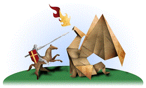
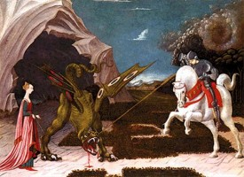
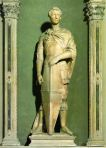

<div class="container-fluid">
    <div class="row">

        <div class="card text-bg-light">
            <div class="card-body">
                <h1 class="titCard">Sant Jordi</h1>
                <h3 class="titCard">Patró de los scouts</h3>
                <h4 class="col-lg-12 col-md-12 col-sm-12">
                    <div class="row">
                        <p class="textoP col-lg-8 col-md-8 col-sm-8">Baden Powell va escollir a Sant Jordi com el sant
                            patró dels scouts. Aquesta elecció tinguè dos motius. En primer lloc, Sant Jordi és el patró
                            d'Anglaterra, el país de Baden Powell. Però principalment B.P. va triar a Sant Jordi perquè
                            era un cavaller errant, i són moltes les vegades que B.P. compara a un scout amb un
                            cavaller. Per què? Segons Baden Powell la Llei Scout és molt semblant als codis d'honor dels
                            cavallers errants. Un cavaller, així com un escolta, és lleial, és generós, és valent i
                            compleix amb allò que promet. Precisament Jordi va ser un heroi per actuar amb valentia
                            davant el perill. Estigues ben atent, que t'anem a explicar la història de Sant Jordi i el
                            drac.
                        </p>
                        
                    </div>
                </h4>

                <h1 class="titCard">La llegenda de Sant Jordi i el drac</h1>
                <h4 class="col-lg-12 col-md-12 col-sm-12">
                    <div class="row">
                        <p class="textoP col-lg-8 col-md-8 col-sm-8">
                            Hi ha moltes i diferents versions de la llegenda. Alguns la situen al Líban, altres parlen
                            de Dalmàcia, i altres vegades la llegenda passa a la ciutat de Silebe (Líbia). Va arribar un
                            dia a la ciutat un enorme drac, increïblement ferotge i molt fort i ràpid. L'única cosa tan
                            gran com la seua grandària era la seua gana. El drac destrossava els cultius i contaminava
                            les aigües del mar i tot allò que estigués al seu voltant.
                        </p>
                        
                        <p class="textoP col-lg-12 col-md-12 col-sm-12">
                            Cundió el temor entre los pobladores de toda la región, muy afligidos todos a causa de este
                            monstruo. Se cuenta que algunos propusiero unirse todos para hacer frente al dragón y tratar
                            de derrotarlo. Pero todo resulto infructuoso, pues cada vez que aparecía el dragón cundía un
                            pánico generalizado y como resultado los habitantes huían despavoridos, olvidándose de hacer
                            frente al monstruo. No obstante algunos pobladores llamaron a sus vecinos y entre todos
                            resolvieron que para evitar que el dragón atacara la ciudad le ofrecerían dos ovejas
                            diariamente como alimento para apaciguar su apetito. Es va estendre la por entre els
                            pobladors de tota la regió, molt afligits a causa d'aquest monstre. S'explica que alguns
                            proposaren unir-se tots per fer front al drac i tractar de derrotar-ho. Però tot resultà
                            infructuós, ja que cada vegada que apareixia el drac s'estenia un pànic generalitzat i com a
                            resultat els habitants fugien espaordits, oblidant-se de fer front al monstre. Els veïns
                            resolgueren que per evitar que el drac ataqués la ciutat li oferirien un parell d'ovelles
                            diàriament com a aliment per apaivagar la seua gana.
                        </p>
                        <p class="textoP col-lg-8 col-md-8 col-sm-8 mt-4">
                            Però arribà el moment en què van començar a escassejar les ovelles. Va ser aleshores quan el
                            rei prengué la decisió que per aplacar al drac se li donés tots els dies una ovella i una de
                            les joves de la ciutat, que tots els dies seria triada per sorteig. Però va voler la
                            destinació que transcorreguts pocs dies, el sorteig recaigués en la pròpia filla del rei.
                            Com és lògic suposar la desesperació es va fer presa del rei. El rei va reunir al seu poble
                            i els va demanar pietat per la seva única filla. Va oferir al poble tots els seus béns, fins
                            i tot el seu regne, a condició de salvar a la seua única filla.<br><br>
                            El rei va rebre com a única resposta una furiosa indignació. Ningú volia accedir a la
                            petició del rei i molt menys aquells que havien sacrificat a les seves filles en compliment
                            de la llei dictada pel rei. Va ser així com se li tirà en cara tot això, aclarint-li que ell
                            no podia anar en contra del dictat de les seves pròpies lleis. El poble havia complert i
                            exigia compliment al rei. En no quedar altra alternativa ja que el poble estava ja disposat
                            a rebel·lar-se contra el seu rei, la mateixa princesa va acceptar el seu paper.
                        </p>
                        

                        <p class="textoP col-lg-12 col-md-12 col-sm-12 mt-4">
                            Arribat el moment del sacrifici, la jove filla del rei va ser acomiadada per aquest i la
                            seua mare qui ploraven amargament. La xiqueta va agafar el camí cap al lloc on menjava el
                            drac, acompanyada d'una ovelleta i d'un soldat que les acompanyava fins al lloc on es
                            trobarien a la bèstia ferotge. La jove princesa es va parar al lloc, davant de la mar, a
                            l'espera d'una mort segura. Però ocorregué que un jove cavaller errant vingut d'altres
                            terres les va albirar en la llunyania i va ser a la trobada de la nena i la seva ovella. En
                            arribar indagà sobre els motius de la seva presència amb la seua estranya companya en aquest
                            lloc. La xiqueta li explicà amb detalls la història del drac i quina serà la seua fi,
                            similar a la que ja van tindre altres jovenetes de la regió.
                        </p>

                        <p class="textoP col-lg-8 col-md-8 col-sm-8 mt-4">
                            Jordi, que este era el nom d'aquell cavaller cristià li va dir: "Res has de témer, jo
                            t'ajudaré en el nom de Jesús i així salvaràs la teua vida". Va ser en aquest moment quan va
                            aparèixer el drac, espantós monstre que treia foc per la boca. Jordi, muntat en el seu
                            cavall blanc i armat amb una llança va carregar valerosament contra el drac, al qual
                            travessa amb la seva llança, donant-li mort a l'acte. Un cop mort el drac el cavaller el va
                            lligar i el va portar, arrossegant-lo, fins a la ciutat.<br><br>Tots els pobladors de la
                            regió van celebrar vore el drac mort, ja vençut per Jordi, qui per tota explicació va dir
                            que havia pogut vèncer la bèstia amb la seva valentia i l'ajuda de Déu. Quan el rei va
                            retrobar-se amb la seva filla sana i salva, ell i tots els seus súbdits es convertiren al
                            cristianisme i es van fer batejar. El rei va cridar a Jordi i li va oferir tot el que
                            vullgués, però el cavaller va rebutjar qualsevol riquesa i únicament va demanar protecció i
                            ajuda per als necessitats de la ciutat, així com que el rei cuidés de les esglésies. Després
                            de la trobada, el cavaller va partir de la ciutat, a la recerca de noves aventures en què
                            servir a aquell que ho necessités.
                        </p>
                        

                    </div>
                </h4>

            </div>
        </div>

    </div>


</div>